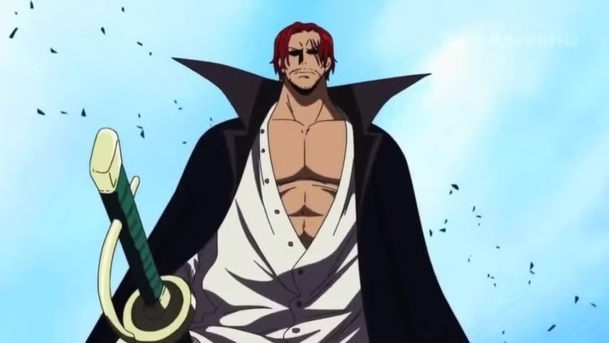

5º LUGAR
Roronoa Zoro sonha em se tornar o maior espadachim do mundo

Roronoa Zoro é o primeiro membro da tripulação de Monkey D. Luffy e, com exceção do próprio Chapéu de Palha, nenhum personagem da série alcançou notoriedade tão rapidamente. Em quase todos os arcos de One Piece , Roronoa Zoro derrota um oponente ainda mais impressionante, resultando em uma recompensa cada vez maior. Ele também parece aprender uma nova técnica de espada ainda mais impressionante a cada novo arco. Suas melhorias notáveis são o motivo de sua classificação em 5º lugar.
4º LUGAR
Shimotsuki Ryuma enfrentou Zoro no Thriller Bark

Shimotsuki Ryuma foi um famoso samurai da terra de Wano. Durante sua época, séculos antes dos eventos de One Piece , ele era considerado o espadachim mais forte do mundo. Conhecido por ter matado um dragão com um único golpe de espada, Ryuma é comprovadamente habilidoso com o Haki da Cor das Armas. Infelizmente, informações sobre Shimotsuki Ryuma são escassas.
3º LUGAR
Silvers Rayleigh ensinou Luffy a usar Haki

Silvers Rayleigh, também conhecido como o Rei das Trevas, é o ex-oficial dos Piratas do Roger e um dos personagens mais fortes de One Piece . Apesar da idade avançada, ele ainda é considerado um lutador lendário por praticamente todos os personagens que conhece, e foi ele quem ensinou Luffy a usar Haki durante o salto temporal do anime . Além disso, Rayleigh é conhecido por ser um habilidoso espadachim.
2º LUGAR
Mihawk derrotou Roronoa Zoro com uma pequena faca

Mihawk foi visto pela primeira vez durante o arco Baratie de One Piece , e imediatamente demonstrou o quão longe os Chapéus de Palha tiveram que ir para se igualar aos melhores combatentes. Ele dizimou a frota de Don Krieg e imediatamente infligiu uma derrota humilhante a Zoro usando apenas uma pequena faca. Empunhando uma espada negra mortal chamada Yoru, não é de se admirar que Dracule Mihawk tenha conquistado sua posição como um dos Sete Senhores da Guerra do Mar, sem mencionar o Espadachim Mais Forte do Mundo.
1º LUGAR
Shanks é um dos quatro imperadores e um mestre de Haki

Como um dos Quatro Imperadores do Mar, Shanks exerce mais influência do que quase qualquer pessoa na história de One Piece . E ele não alcançou esse status por ser passivo. Ele é um dos poucos verdadeiros candidatos a se tornar o próximo Rei dos Piratas e, como sucessor espiritual de Gol D. Roger, é natural que ele exiba uma força avassaladora como o espadachim mais forte de One Piece .
 Pequeno
Pequeno